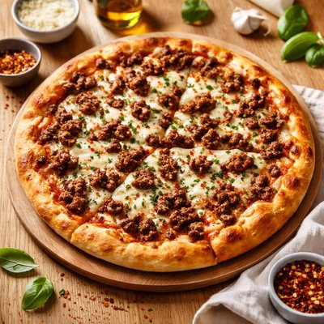

Pizza cargada de carne y queso

Si una pizza normal ya es una comida contundente, esta versión lleva el concepto varios pasos más allá. La combinación de diferentes carnes y una generosa cantidad de queso convierte esta pizza en una auténtica receta de Tapa arterias. Es perfecta para compartir, aunque alguien con mucha hambre podría intentar enfrentarse a ella por su cuenta.